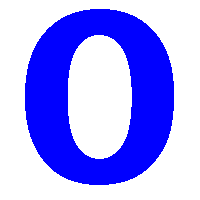

Pozycyjne systemy liczbowe
| HEX | BIN | DEC |
| A | 1010 | 10 |
| B | 1011 | 11 |
| C | 1100 | 12 |
| D | 1101 | 13 |
| E | 1110 | 14 |
| f | 1111 | 15 |
Słowniczek
- Binarny
- pozycyjny system liczbowy, w którym podstawą jest liczba 2, a do zapisu liczb potrzebne są tylko dwie cyfry: 0 i 1.
- Decymalny
- pozycyjny system liczbowy, w którym podstawą jest liczba 10; do zapisu liczb stosuje się 10 cyfr: 0, 1, 2, 3, 4, 5, 6, 7, 8, 9.
- Heksadecymalny
- pozycyjny system liczbowy, w którym podstawą jest liczba 16. Do zapisu liczb w tym systemie potrzebne jest szesnaście znaków.